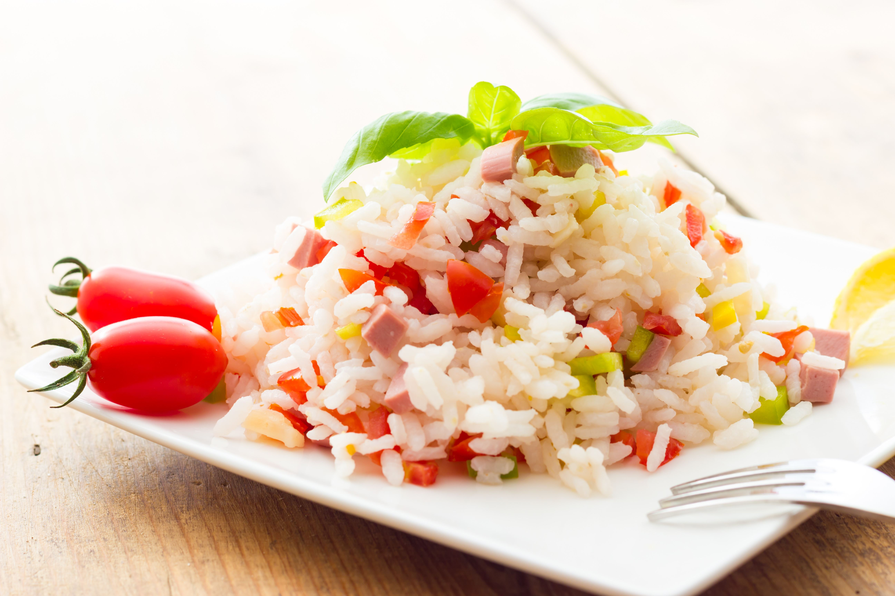

<ion-view view-title="Salade de riz">

    <ion-content class="padding">


        <h1>Salade de riz</h1>

        

        <p class="gras">Temps de préparation : 30 minutes</p>

        <p class="gras">Temps de cuisson : 10 minutes</p>

        <p class="gras">Ingrédients (pour 4 personnes) :</p>

        <ul>
            <li>- 500 g de riz blanc (ou aromatisé)</li>
            <li>- 200 g de thon au naturel</li>
            <li>- 2 tomates</li>
            <li>- 2 cuillères à soupe d'olives vertes dénoyautées</li>
            <li>- 2 oeufs durs</li>
            <li>- 300 g de maïs</li>
            <li>- Pour la vinaigrette, faites selon vos goûts</li>
        </ul><br>

        <p class="gras">Préparation de la recette :</p>

        <p>Cuire le riz à l'eau bouillante salée. Une fois cuit, le rincer à l'eau froide pour enlever l'amidon.</p>

        <p>Quand le riz est froid, ajouter les oeufs coupés en lamelles, les tomates en dés, les olives, le maïs et le thon en miettes.</p>

        <p>Réserver au réfrigérateur puis servir frais.</p>

    </ion-content>

</ion-view>